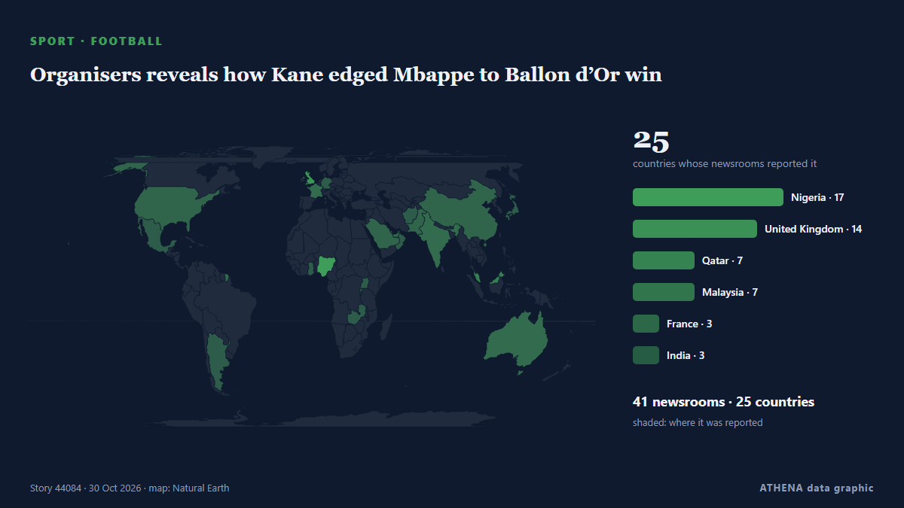

Organisers reveals how Kane edged Mbappe to Ballon d’Or win

Bayern Munich striker Harry Kane has beaten Barcelona youngster Lamine Yamal and Real Madrid forward Kylian Mbappé to emerge as the best player of the 2025-2026 season in Spanish newspaper Marca's… από Vanguard
Αναφέρθηκε ανεξάρτητα από 42 μέσα σε 25 χώρες από τις 23 Οκτ, πρώτο από το Vanguard· η κάλυψη εξασθενεί. Τα αθλητικά και τα πολιτιστικά καταχωρούνται χωρίς εκτίμηση κινδύνου. Η βεβαιότητα είναι 92% (υψηλή), καθώς το επιβεβαιώνουν 42 ανεξάρτητα μέσα με μέση αξιοπιστία πηγών 73%.
Τι άλλαξε: 7 νέες αναφορές από 5 μέσα στο 24ωρο έως 31 Οκτ.
Πρώτη διατύπωση: Ballon d’Or 2026: Can Kylian Mbappe’s Real Madrid and France record win it?
Οι τίτλοι των ειδήσεων παρουσιάζονται στα αγγλικά, όπως δημοσιεύτηκαν.
Με μια ματιά
Επιλέγεται, βαθμολογείται και γράφεται από τη δημοσιευμένη μεθοδολογία του ATHENA. Κανένας συντάκτης δεν παρεμβαίνει σε μεμονωμένα γεγονότα. Πώς παράγεται ›
| 23 Oct 11:52 UTC | 1 |
|---|---|
| 23 Oct 23:52 UTC | 0 |
| 24 Oct 11:52 UTC | 1 |
| 24 Oct 23:52 UTC | 0 |
| 25 Oct 11:52 UTC | 1 |
| 25 Oct 23:52 UTC | 1 |
| 26 Oct 11:52 UTC | 6 |
| 26 Oct 23:52 UTC | 7 |
| 27 Oct 11:52 UTC | 10 |
| 27 Oct 23:52 UTC | 5 |
| 28 Oct 11:52 UTC | 14 |
| 28 Oct 23:52 UTC | 18 |
| 29 Oct 11:52 UTC | 8 |
| 29 Oct 23:52 UTC | 1 |
| 30 Oct 11:52 UTC | 6 |
| 30 Oct 23:52 UTC | 1 |
Γιατί αυτοί οι αριθμοί
Σημασία
Κίνδυνος
Βεβαιότητα
Η κάλυψη — ποιος το ανέφερε και πότε
ο τίτλος όπως δημοσιεύτηκε · ανοίγει το πρωτότυπο- Vanguard · Νιγηρία · NigeriaKane edges out Yamal to win award 3 days ahead of Ballon d’Or ceremony
- Al Jazeera English · Κατάρ · QatarBallon d’Or 2026: Can Kylian Mbappe’s Real Madrid and France record win it?
- Al Jazeera English · Κατάρ · QatarBallon d’Or 2026: Can Barcelona phenom Lamine Yamal become youngest winner?
- Evening Standard (London) · Ηνωμένο Βασίλειο · United KingdomKylian Mbappe 'reveals Ballon d'Or win' in fan theory ahead of London ceremony
- France 24 English · Γαλλία · FranceFootball: Who will win the 2026 Ballon d'Or?
- Evening Standard (London) · Ηνωμένο Βασίλειο · United KingdomWho is Kylian Mbappé’s rumoured girlfriend? Meet actress Ester Expósito
- Evening Standard (London) · Ηνωμένο Βασίλειο · United Kingdom'What an embarrassment': Arsenal fans react to William Saliba Ballon d'Or 2026 ranking reveal
- Channels TV · Νιγηρία · Nigeria[FULL LIST] Ballon d’Or 2026: Kane, Yamal, Messi, Mbappé, Chawinga Among Top 10 Finalists
- The Irish News (Belfast) · Ηνωμένο Βασίλειο · United KingdomCahair O’Kane: Conn Kilpatrick and the invisible line between winning and losing
- Buenos Aires Herald · Αργεντινή · ArgentinaHarry Kane beats Messi to 2026 Ballon d’Or
- Chronicle Live (Newcastle) · Ηνωμένο Βασίλειο · United KingdomWilliam Osula has £244m answer to those who can't see life at Newcastle after Anthony Gordon and Co
- KT Press · Ρουάντα · RwandaHarry Kane’s Ballon d’Or and a Lesson Rwanda Should Never Forget
- Evening Standard (London) · Ηνωμένο Βασίλειο · United KingdomBallon d'Or: Fans bemused by 'awkward' Thierry Henry and Kate Scott gaffe
- Vanguard · Νιγηρία · NigeriaBallon d’Or: Barcelona star honours late Nigerian mother after winning Young talent award
- Indian Express · Ινδία · IndiaBoos for ad-breaks, premature declaration of ‘winners’: 3-hour long Ballon D’Or ceremony draws flak
- Times of India · Ινδία · IndiaKane’s childhood photo with Katie Goodland resurfaces after Ballon d’Or win
- Al Jazeera English · Κατάρ · QatarThe Ballon d’Or has a narrow definition of footballing greatness
- Chronicle Live (Newcastle) · Ηνωμένο Βασίλειο · United KingdomKylian Mbappe sends two-word message to William Osula after Newcastle United heroics
- RFI English · Γαλλία · FrancePSG bosses hail club of the year success at 2026 Ballon d'Or awards
- BBC News · Ηνωμένο Βασίλειο · United KingdomHow Kane defied doubters to become world's best
- Indian Express · Ινδία · India‘He’s never carried his team in biggest matches’: Ex-French footballer questions Kane’s Ballon d’Or
- Vanguard · Νιγηρία · Nigeria‘Wouldn’t be possible without you,’ Kane tells wife after Ballon d’Or win
- The Conversation (global) · Αυστραλία · AustraliaHarry Kane wins Ballon d'Or – a victory for sportsmanship over celebrity
- Mexico News Daily · Μεξικό · MexicoMexico’s Charlyn Corral is named Best Striker of the Year at soccer’s biggest award ceremony
- The Scotsman · Ηνωμένο Βασίλειο · United KingdomWho Will Win The Best Actor Oscar 2027? Here are the 10 stars tipped for the Academy Award - Andrew Scott favourite with Tom Cruise in line for a nomination
- ProtoThema English ·Nike’s empire under threat: $230 billion wiped off its value as sporting stars defect and new rivals gain ground
- Belfast Telegraph · Ηνωμένο Βασίλειο · United KingdomThe London Palladium has seen a galaxy of stars grace its stage... but nothing quite like the emotional night hometown hero Harry Kane won the Ballon d’Or
- Punch · Νιγηρία · NigeriaNo player better than Messi at 2026 World Cup — Yamal
- News Diggers · Ζάμπια · ZambiaBB11 drops to 18th in Ballon d’Or rankings
- The Local Germany · Γερμανία · GermanyToday in Germany: A roundup of the latest news on Wednesday
- Punch · Νιγηρία · NigeriaBallon d’Or: Henry breaks silence on Yamal, Kate Scott controversies
- Vanguard · Νιγηρία · NigeriaThierry Henry explains Yamal joke after fans accuse him of disrespect
- Al Jazeera English · Κατάρ · QatarBallon d’Or win will help keep Kane at Bayern, says Germany’s Matthaus
- Cyprus Mail · Κύπρος · CyprusBallon d’Or title will help keep Kane at Bayern, says Matthaeus
- Vanguard · Νιγηρία · NigeriaRonaldo’s 2008 Ballon d’Or named best of all time in fan vote
- Vanguard · Νιγηρία · NigeriaFull list: Ballon d’Or of All Time as Ronaldo emerges winner
- Punch · Νιγηρία · NigeriaRonaldo’s 2008 Ballon d’Or tops fan poll
- Nile Post · Ουγκάντα · UgandaAll Spanish cup matches suspended after Madrid train collision
- Channels TV · Νιγηρία · NigeriaChelsea Win As Bayern, Madrid Share Points In Women’s Champions League
- Fortune · Ηνωμένες Πολιτείες · United StatesSoccer superstar Kylian Mbappé is the latest global name to find himself on the wrong side of Chinese patriotism